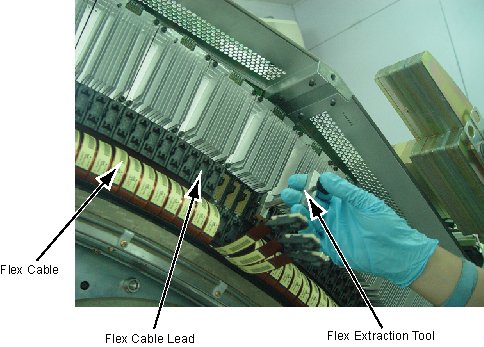
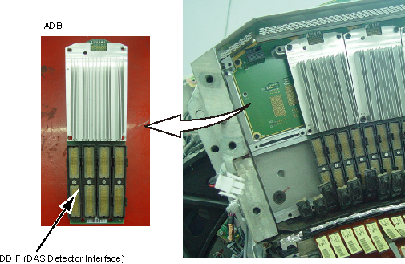

Operating Documentation
Direction 5181178-800, Rev# 16
Module Version 4.0, Version Date 11/13/12
Operating Documentation |
| ||||
| Follow ALL required safety and PPE procedures customary for your organization when working on this product. | ||||
| ||||
| Follow ALL Electro-Static Discharge procedures. Always use ESD Wrist Strap and grounding cords. The use of a ground Monitor is suggested. | ||||
| Condition | Reference | Effectivity |
|---|---|---|
Only trained service personnel should service the GE CT Scanner. | - | - |
Position the Table to its lowest position.
Remove the Gantry right side cover.
| ||||
| Always turn OFF the HVDC before the 120 VAC. Turning OFF 120 VAC power before HVDC power can result in equipment damage. | ||||
Turn OFF Axial Enable, HVDC, and 120VAC switches on the Service Switch panel.
Remove the rest of the gantry covers.
Position the PDAS at the 2 o'clock position
Lock the Gantry in position, using the rotational lock.
Disconnect the fan power cable from the Duct Fan Cover.
Remove the Duct Fan Cover by unscrewing its M6x12 allen screws
by a  on the Duct Fan Cover.
on the Duct Fan Cover.
Illustration 1: Remove the Duct Fan ASM

Install two the cover handles (5488043) shipped with system ship collector on the Air Filter ASM.
Illustration 2: Install the Cover Handles

Remove the Air Filter ASM and Detector Duct Fan Cover together by unscrewing their M10x8 allen screws.
Illustration 3: Remove Air Filter ASM and Detector Duct Fan Cover

Put on Nitrile protective gloves and wrist strap and use ESD precautions.
Pull out the Flex Cable Leads from the DDIFs of the defective ADB with the Flex Extraction Tool.
Illustration 4: Remove the Flex Cable

Remove the defective ADB by unscrewing its M4x6 screws.
Illustration 5: Remove the ADB

Remove DDIF slot and Install it to new ADB, refer to DAS Interposer Replacement. If the swap ADB position, skip this step.
Place the defective ADB into an ESD bag.
Take out the new ADB from ESD bag.
Align the ADB location hole to pin on the backplane and push ADB in place.
| ||||
| Card must be fully seated. Failure to fully seat a ADB into the PDAS backplane may result in the failure of all 1024 channels in that ADB. | ||||
Push the ADB toward the backplane, and secure the ADB in place by screwing its 6 screws. Screws torque refer to below illustration:
Reconnect the Flex Cables to the new ADB.
Reinstall the Air Filter ASM and Detector Duct Fan Cover by screwing their 8 allen screws. (Torque: 38.4 N.m)
Uninstall two the cover handles from the Air Filter ASM.
Reinstall the Duct Fan Cover by screwing its 12 allen screws. (Torque: 7.9 N.m)
Reconnect the fan power cable to the Duct Fan Cover.
Disengage the rotational lock.
Turn ON Axial Enable, HVDC, and 120VAC switches on the Service Switch panel.
Perform a DAS Rest from the Reset Menu.
Depending on the fault, let the board warm-up five (5) minutes to verify it fixed the problem, but at least 1 hour before DAS Tools, FastCal, or Image Quality scans. A cold board may fail Offset Drift or Pop Noise until it is in normal operating temperature ranges.
Verify proper functionality:
Run at least 10 passes of Scan Data Path Diagnostic.
Run 1 pass of DAS Tools.
Run FastCal, if only one card replaced.
Run full FastCal and Phantom Cal, if more than 2 cards replaced or if I/Q fails due to replaced boards.
Take 10 I/Q scans of the 48cm phantom.
Verify fault or reason to replace the board now passes.
Perform Saving System State
Reassemble the Gantry covers.